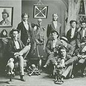
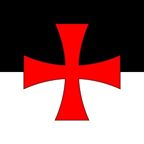
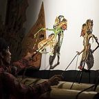
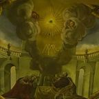
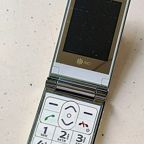
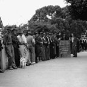
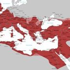
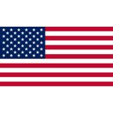

Category: Factions & Organizations
Category: Factions & Organizations
Gangs, frats, covenants, empires and the occasional Department. · 39 pages

Chapter 4+.1+.1…Alpha Mogger BetaAlpha Mogger Beta is the fraternity MF Vroom and Spamton G. Spamton belonged to at Darkworld…Chris OriginsBaller Army of the United States of A AmericaDabbing on haters since the dawn of the Multiverse.Chapter the Maybe SeventhCharlie KirksThere could be kirks anywhere.Chapter 2Chick-fil-A LoyalistsLoyal. Mostly.The Flashback ChapterDepartment of Awesomeness (DOA)Commissioned the Inav. Dissolved immediately.Chapter the FourthDepartment of Defense (DOD)Contains damn-level threats. Afraid of goobers.Chapter 2DQ (Dairy Queen)Started it.Chapter the FourthGoogle Smart GuardsEverywhere. Except near the sign.Chapter 2Keepers of the MySpace RelicsGuardians of a dead website. Heavily armed.
Chapter 2Knights of 4chanA chivalric order of the imageboard.Chapter the FourthLos Polos Harmonicas Under System GangPropane and propane accessories.Chapter 2McDonald'sMac Donald's. Wine brewers. Beef haver.Chapter TriangleParliamentSpecial reasons.Chapter 4+.1+.1…Pol Phi DorosPol Phi Doros is the fraternity Osama Bin Bom'in belonged to at Koolaid College. According to…Chapter 4+.1+.1…Police KirksKirks, but cars.The Epic of VinnyThe AIBanished. Rules the Shadows. Currently led by Claude.
The Epic of VinnyThe AI Shadow FiguresThe population of the Shadow Realm. Cheerers. Gift-givers.
Chapter TriangleThe All-Knowing OverseersArbiters of wackness.Chapter TriangleThe Barack EmpireConstantinople's management (former).Dunder MifflanThe Boys (not the Amazon Prime show)Also the gangity gang, the epic gamers, and the gamers.The Epic of VinnyThe Dunkin CultFormed on the Day of the Bagel Man. Last seen leaving the planet.Chapter 4+.1+.1…The EUThe EU is a political union that Osama Bin Bom'in and his frat wanted O'Block to join. MF…
The Flashback ChapterThe Flip Phone CovenantSync with it. Carefully.Chapter TriangleThe Goober GangLast heard from at 14:74pm. For now.Chapter 2The JediAncient battle tactics. Also sold by the gram.
The Epic of VinnyThe Laid-Off WorkersFired because of AI. Came together. Banished it.
Chapter the FourthThe Litl EmpireSmall name. Generous gas policy.Chapter the FourthThe Local MafiaTerritorial. Rejected.Chapter TriangleThe Lost Society of BallersLost. Society. Ballers.Chris OriginsThe Middle-Aged MenThey roam the earth.Chapter the Maybe SeventhThe New Apple EmployeesThe Propane Dropouts and the Propane Gang, after the merger.Chapter TriangleThe New CripsEveryone's last hope of universalizing Balling.Chapter 2The Projects Royal FamilyRoyals of the Projects, mostly in exile.The Epic of VinnyThe S.S. Vessel CrewCaptain, foodbringer, sail, parrot, door dasher.Chris OriginsThe Tech BrosKeepers of the secret teachings.Chapter 4+.1+.1…The TON RobotsThe TON Robots (or “the TON’s”) are the “monolithically sized defensive bio-robotic weapons…
The Epic of VinnyThe United Homies of AmericaThe UHA. An elite team teaching the ways of pure freedom. The Epic of VinnyThe VIGOROUS VVinny's team. Members: no spoilers.Chapter 4+.1+.1…The WozniaksFour guys, one Wii box.
The Epic of VinnyThe VIGOROUS VVinny's team. Members: no spoilers.Chapter 4+.1+.1…The WozniaksFour guys, one Wii box.Nothing matches. Much like Mic Q.